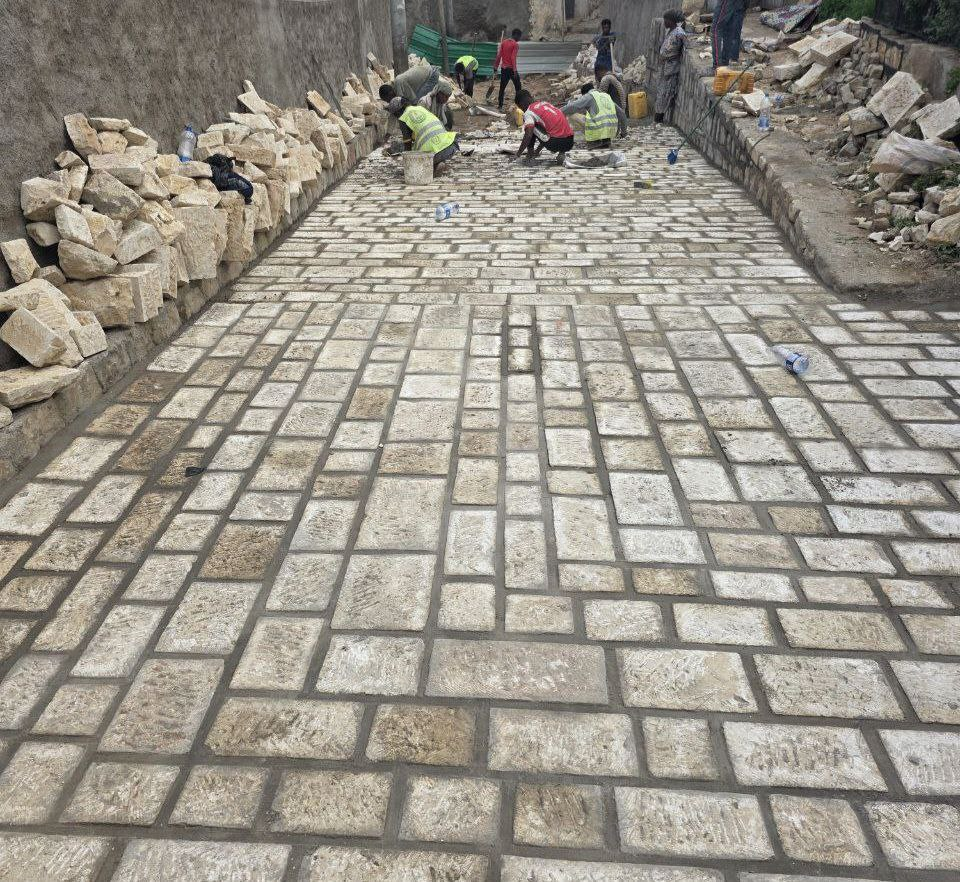
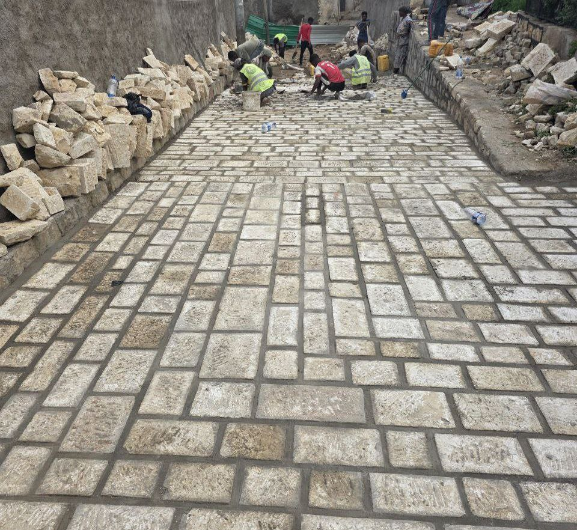

Before renovation began on the Jugel streets — from Mohammed Ali to Bedri Beri Gate — the area faced major sanitation issues. Wastewater from homes was flowing directly on the ground due to the absence of a proper drainage system.
To resolve this, we installed an underground drainage system that channels wastewater from every household into a concealed network of ditches. The old cobblestones were removed and replaced with new, durable paving stones to improve both the functionality and appearance of the Street
We also opened the ditches and carried out the necessary maintenance and repairs to restore proper drainage flow.
This renovation project covers a total area of 2,500 square meters.
Current Progress: 12% complete
Estimated Completion: December 2025
 
